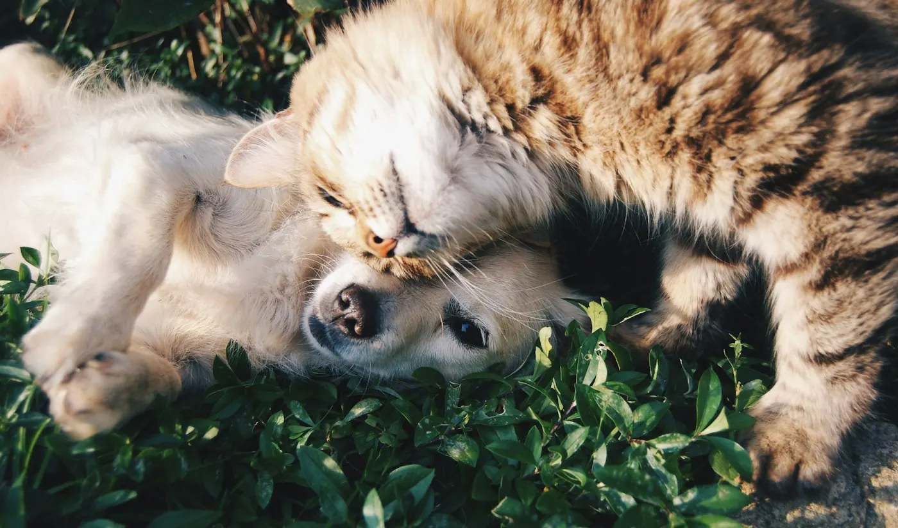
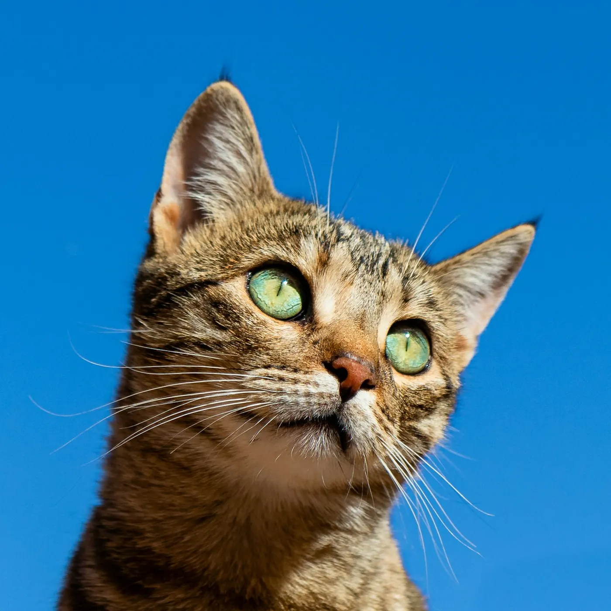
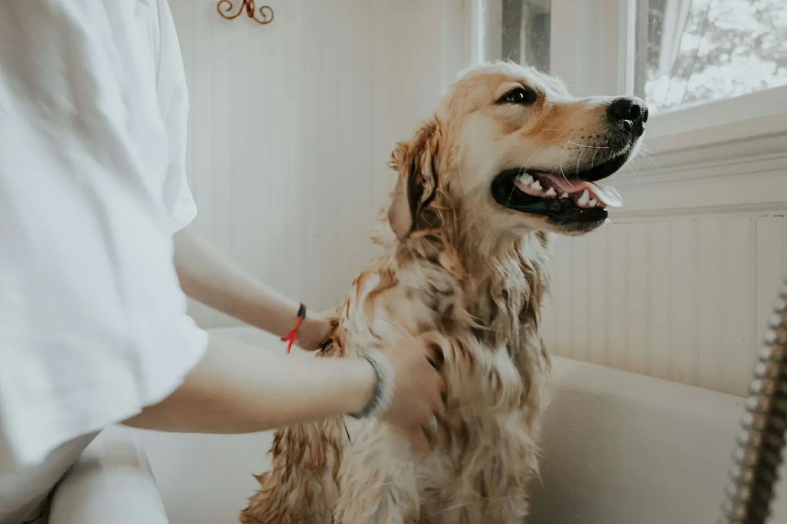

文藝動物醫院位於台北市中山區民生東路一段 87 號地下 1 樓，為合法立案的動物醫院，公開服務項目包含一般動物內外科診療與疫苗注射。
帶毛孩就診前，建議先以電話或官方 LINE 聯絡，說明狀況與希望的時段。若是第一次前來，也請預留時間辦理報到。
醫院在地下一樓，抵達後請留意騎樓或大樓入口指示。實際看診內容與是否需要進一步檢查，都需由現場獸醫師評估。
以下整理自公開資料中的服務方向。個別情況是否適合就診、以及實際處置方式，都需由獸醫師當面評估。
了解毛孩最近的飲食、精神與不適情形，再決定後續檢查或處理方式。
提供一般動物內外科方向的診療。是否需要進一步處置，請以當日評估為準。
依毛孩年齡與疫苗紀錄安排預防注射。請攜帶過去的疫苗單或病歷，方便核對。
以下為一般動物醫院常見的就診步驟，實際流程請依現場說明為準。
請先打電話或透過官方 LINE 說明狀況，並確認可看診時段。
醫院位於地下 1 樓。請依約定時間到達，並留意入口位置。
請說明不適開始的時間、飲食、排泄與近期是否有撞傷或用藥。
依獸醫師指示用藥、回診或居家照護。若狀況變化，請再與醫院聯絡。
以下整理自公開營業時間，臨時異動請以電話或官方 LINE 確認。
| 一 | 二 | 三 | 四 | 五 | 六 | 日 | |
|---|---|---|---|---|---|---|---|
| 門診 | 10:00–20:00 | 10:00–20:00 | 10:00–20:00 | 10:00–20:00 | 10:00–20:00 | 10:00–20:00 | 休診 |
以下為氣氛示意照片，不是醫院實景。實際空間請以現場為準。


請撥打 02-2581-7881，或加入官方 LINE @ctb7395u 留言。建議先確認時段再帶毛孩前往。
請盡量攜帶毛孩的疫苗紀錄、過往病歷或目前正在使用的藥品。若是急症或不適突然加重，也請先電話說明狀況。
依公開資料，週日休息，週一至週六 10:00–20:00。出發前仍建議再確認一次。
地址是民生東路一段 87 號地下 1 樓，近捷運中山站、雙連站。抵達後請尋找大樓或騎樓往地下室的入口。
診察、檢查與用藥費用會依實際處置而異，請以現場說明為準。本頁不列出可能異動的金額。